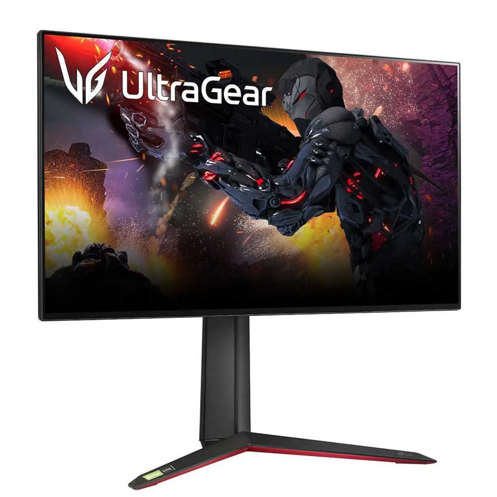

El monitor gaming es un componente vital para la experiencia de juego y trabajo profesional. Este modelo ultra-wide ofrece una inmersión completa gracias a su curvatura y su alta tasa de refresco.

Caractericticas del Panel
Lista de Componentes Principales:
- Tamaño y Curvatura:34 pulgadas con curva 1000R.
- Resolución y Ratio: 1920x1080 3440x1440 (WQHD) con ratio 21:9.
- Permite más espacio de trabajo horizontal.
- Aumenta la inmersión en juegos de simulación.
- Tasa de Refresco: Frecuencia de hasta 165 Hz.
- Tecnología de Sincronización: Compatible con NVIDIA G-SYNC y AMD FreeSync.
Tabla: Conectividad y Puertos
| Resumen de Puertos | |
|---|---|
| Tipo de Puerto | Cantidad |
| DisplayPort 1.4 | 1 |
| HDMI 2.1 | 2 |
| USB 3.0 (Hub) | 3 |
Enlaces y Contacto
Encuentra los mejores monitores con detalles de sus características en la PC Componentes Monitores Gaming